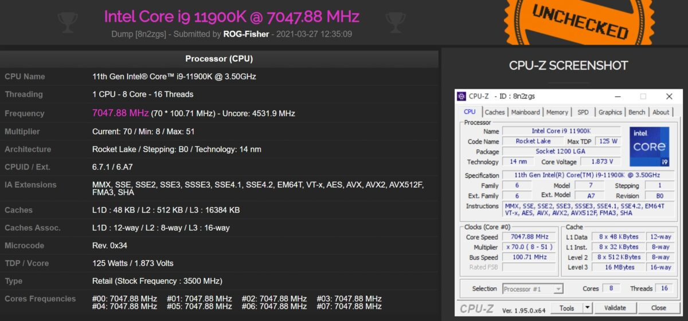

Intel Core i9-11900K a atins 7GHz într-o sesiune de overclock extrem
Intel navighează prin ape tulburi în ultima vreme, iar lansarea generației Rocket Lake-S este maxim decentă. Asta nu i-a oprit pe unii pasionați de overclock să tragă la maxim de noile procesoare, iar noul Intel Core i9-11900K a reușit să atingă frecvența de 7GHz într-o sesiune de overclock cu ...
Intel navighează prin ape tulburi în ultima vreme, iar lansarea generației Rocket Lake-S este maxim decentă.
Asta nu i-a oprit pe unii pasionați de overclock să tragă la maxim de noile procesoare, iar noul Intel Core i9-11900K a reușit să atingă frecvența de 7GHz într-o sesiune de overclock cu azot lichid.
Recordul a fost atins de utilizatorul „ROG-Fisher” utilizând o placă de bază ASUS ROG Maximus XIII Apex.
Pentru a atinge frecvența de 7GHz, noul Intel Core i9-11900K a necesitat un voltaj imens, de 1.873v, iar cum o poză face cât o mie de cuvinte, mai jos avem validarea de pe CPU-Z.

Cum scoți frecvențe de genul dintr-un Intel Core i9-11900K?
Dacă sunteți curioși ce fel de echipament folosesc oamenii care stabilesc astfel de recorduri, am atașat mai jos un video în care un overclocker din India a reușit să ducă un Intel Core i9-11900K la 6.5GHz
cu voltajul setat la 1.678v.
Pentru răcire, a folosit aceeași metodă ca și în exemplul de mai sus, cu azot lichid, astfel temperatura procesorului fiind capabilă să coboare și la -178 de grade Celsius.